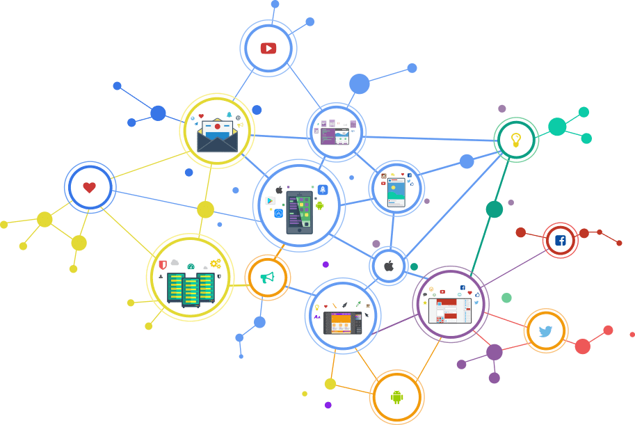

¿Cómo funciona Internet?
Muchos ven a Internet como una “nube” de tecnología o alguna suerte de repositorio de aplicaciones y datos a los que se puede acceder, trabajar o simplemente consultar. Sin embargo, el uso cotidiano hace que muy pocas veces nos preguntemos qué es realmente.
Internet se define como una gran “red de redes”, es decir, una red conectada a otra de manera continua y simultánea, pero para entenderlo mejor veamos primero qué es una red:
Cada uno de estos gráficos representa una especie de red: de computadoras, de puntos o de pesca. Lo que define a estas redes como tales es que existe “interconexión” entre sus componentes, aún cuando no se encuentren la totalidad de los puntos conectados entre sí. Desde cualquier punto de la red podremos llegar a otro, con más o menos vueltas, pero todos los destinos son alcanzables. Internet es justamente eso: una gran red donde todos los dispositivos están conectados entre sí.
¿Cómo se comunican las redes de Internet?
Para que una interconexión sea realmente global, todas las redes que se conectan a la gran red de redes deben hacerlo a través de un mismo protocolo o “lenguaje en común”. Es decir, el protocolo de comunicación de Internet debe ser una implementación estándar que garantice la conexión desde cualquier origen hasta cualquier destino.
Durante la década del ‘70, un grupo de investigadores de Estados Unidos creó un protocolo de comunicación que denominaron TCP/IP, y conectaron entre sí a un conjunto de redes de computadoras a pedido del gobierno de ese país, sin saber que el proyecto resultaría tan exitoso y tendría alcance global. De esta forma, TCP/IP se convirtió en el modelo de comunicación de las redes que componen Internet.
Interconexión Probablemente la computadora que utilizamos a diario en la oficina esté conectada a una red de computadoras. En nuestra casa, la computadora portátil, tablet y celulares los vinculamos a un dispositivo inalámbrico que luego se conecta a la red de fibra óptica de la empresa que nos brinda servicio de Internet y de televisión por cable o telefonía. Éste se comunica a la red de otro Proveedor de Servicios de Internet o ISP (por sus siglas en inglés) más grande, que llega a un número mayor de hogares y empresas, y así sucesivamente. A su vez, estos proveedores de acceso internacional se interconectan con otros más grandes, denominados Carriers, a través de fibras ópticas transcontinentales y satélites, entre otros.
Con el correr de los años, esta gran red de redes ha pasado a ocupar un lugar relevante en múltiples niveles ya que es transversal a cuestiones sociales, políticas y económicas, y ya no excluyente de ámbitos tecnológicos. El impacto de Internet es tal que ha modificado paradigmas y continúa estableciendo nuevos desafíos en torno a la educación, la industria, la seguridad, los derechos humanos, las políticas públicas y las nuevas tecnologías, entre otros.
De lo anterior se hace evidente que Internet no es algo dado y que es producto de un proceso histórico e interdisciplinario que continúa en constante movimiento y en donde la participación de diversas partes interesadas ha sido determinante para su desarrollo. Es por esto que resulta fundamental comprender que la participación de diversos sectores, y más aún de nuevas generaciones, en la Gobernanza de Internet, es indispensable en las definiciones del futuro de Internet, contemplando intereses y derechos de todos los sectores de la comunidad.
Fuente: Curso Fullstack Phyton del programa Codo a Codo